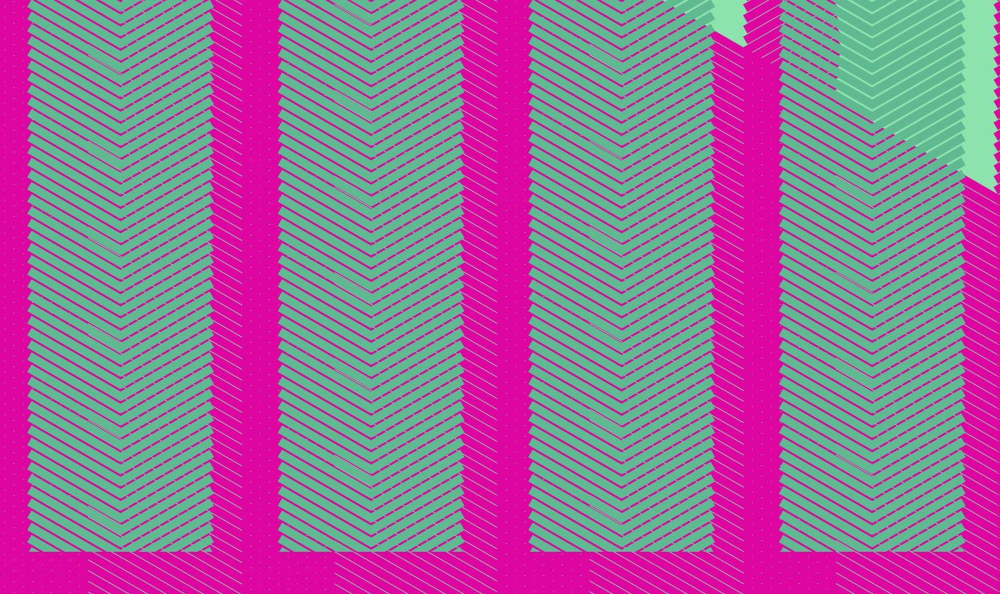

patterns behind patterns in complimentary hues
This series of patterns uses CSS to manipulate divs into specific, repetitive forms resulting in patterns. Color, opacity, position, and overlap are carefully applied to create vibrant color relationships and add depth to otherwise flat forms.